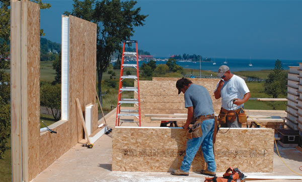
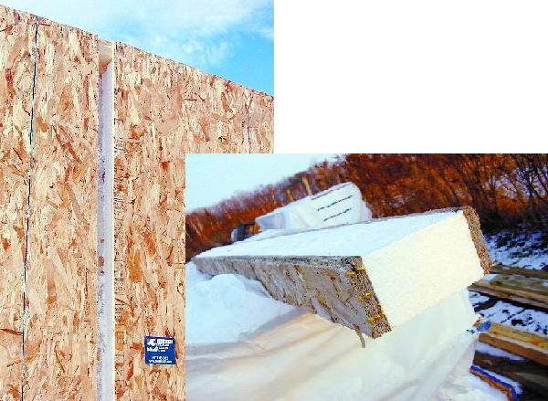
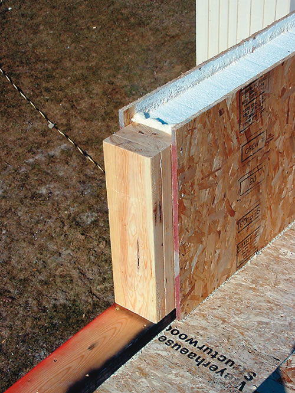
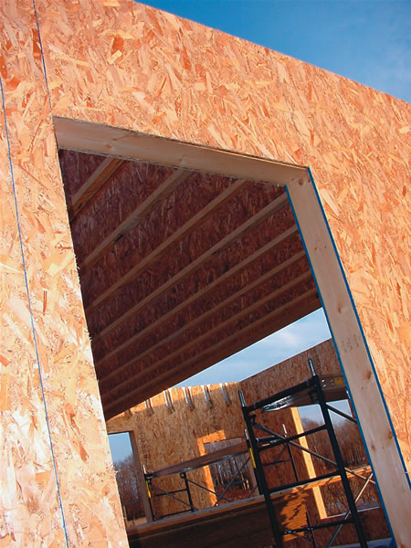
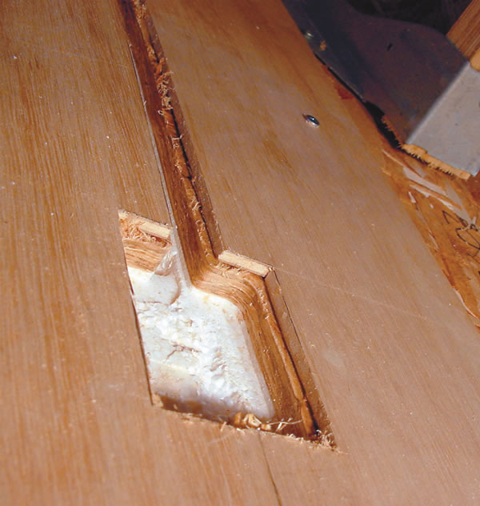
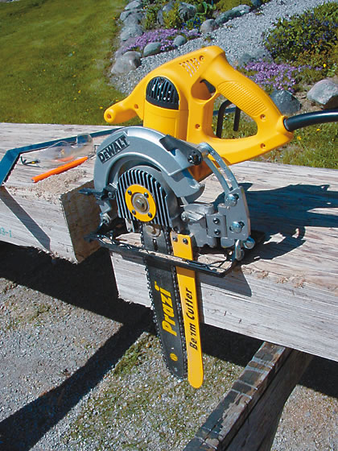
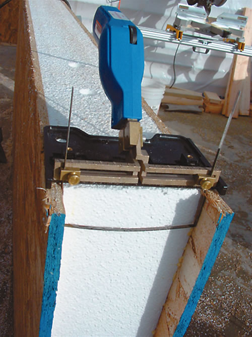
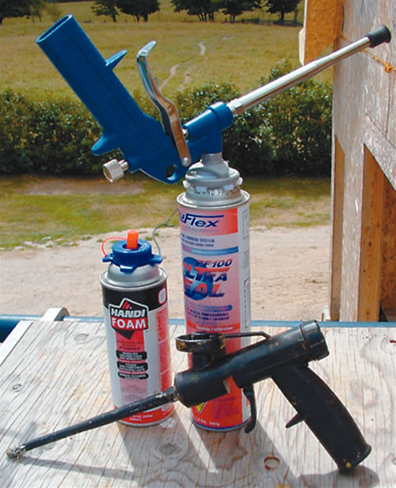
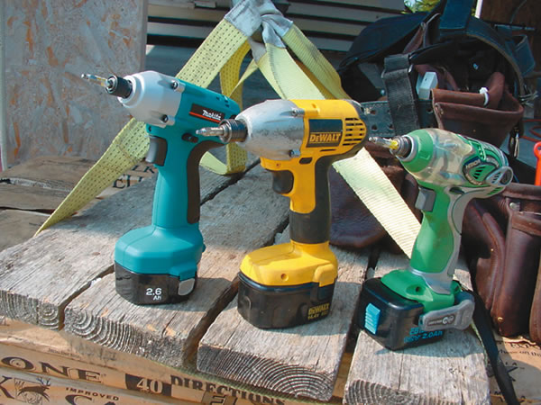
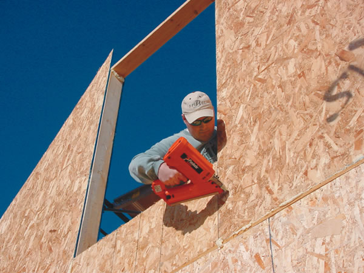

Among the many breakthroughs in building materials and home construction, structural insulated panels (SIPs) are one of the best. SIPs are rigid foam sandwiched between factory-bonded oriented strand board (OSB). Panels are usually 4 to 8 feet wide and up to 24 feet long, and can be used for walls as well as structural roof sections.
They’re simpler to erect than stud- or timber-frame walls, which means they go up faster, too. But the real benefits of SIPs are their strength - twice as strong as a stud wall - and energy efficiency; insulation values typically range from R-15 to R-45 (stick-frame insulation is about R-12 to R-20), depending on panel thickness and the type of foam core. SIPs increase the total building cost by only 1 percent to 3 percent, and labor and energy savings quickly offset the added expense. A study by Brock University in Ontario showed that, over the course of a year, one home with SIPs used only a quarter of the energy consumed by an adjacent stick-frame house with an identical floor plan (for more about this study, see “The Inconsistency of R-values,” below).
“SIPs have some tremendous advantages in terms of energy performance,” says Alex Wilson, executive editor of Environmental Building News. “They create a tight, well-insulated building shell that doesn’t have the thermal bridges that result from wood studs in conventional construction - and they do this with efficient use of resources.”
I’ve built structures with timbers, logs, stone and studs, and my experiences with SIPs have impressed me enough that I’ll use them again. When I chose SIPs for my latest building project - a 1,300-square-foot, two-story workshop - I knew I was heading into new construction territory. (Read about Maxwell’s workshop in A Blueprint for Better Building, August/September 2005. - Mother) But learning to build with this material proved easy, with results that were stronger and more energy efficient than I was expecting. The structure also went up more than three times faster than a stud-frame equivalent - even though I was working mostly alone. Before I even had heat in the place this past winter, indoor temperatures regularly climbed above freezing on days that were below zero outdoors, despite cloudy skies.
You can order precut panels for an entire home - or you can cut the panels to create door and window openings after they are delivered to the building site. Some companies even offer panels with interior or exterior finished surfaces. To make walls, simply tilt the panels upright one at a time. The panel edges are shaped to allow joint connectors called “splines” to lock adjoining panels together. SIPs also are made so that 2-by-4s and 2-by-6s can be installed in the recessed edges around door and window openings. When you’re done, all you see is OSB on the inside and outside faces of the walls.
Various SIP manufacturers offer assembly manuals, but all systems are put together in similar ways. Begin by anchoring a 2-by-4 or 2-by-6 bottom plate (horizontal lumber that forms the bottom of the wall) to your floor. Take the time to firmly bolt these plates down because they hold the panels upright as the walls are raised. Be sure to keep bottom plates absolutely straight because all recessed panel edges are sized to fit over standard widths of lumber. As you’ll see, this will be important when SIPs are fastened at the bottom.
If your SIPs wall rests on a poured concrete slab, then you might want a double bottom plate. By anchoring a wider bottom plate to the slab first and then adding a 2-by-4 or 2-by-6 on top (whichever matches the thickness of panels you’re using), you will raise the panels and drywall 1 1/2 inches off the floor, well away from any puddles that might accumulate. Size the wider bottom plate to match the width of the SIPs you’re using.
Next, lay down a couple of beads of low-expansion polyurethane foam on your bottom plates. Tilt a corner wall panel upright over the lumber, and then get some help positioning it straight up and down (plumb) using a carpenter’s level as reference. When you are absolutely sure the panel is plumb, drive nails every 8 inches horizontally through the OSB sheathing, along the inside and outside bottom SIP edges and into the sides of the bottom plate. These nails “lock” the panel in place with surprising strength as long as the bottom plate is solidly anchored to the foundation. Unlike with a stud-frame wall, there’s little chance for adjusting a nailed SIP after it’s up. You’ll also find a hoseless power nailer is especially helpful when putting up walls because it allows you to move around without getting tangled in hose.
To complete SIP corners, begin by filling in the recessed edge on one of your corner panels with a solid piece of 1 1/2-inch-thick lumber that matches the panel size. Next, put down a layer of foam and then apply another piece of lumber to the inside edge of the first panel you raised by using 2 1/2-inch No. 8 screws to secure the joint. This creates a ridge of wood that interlocks with the recessed edge of the second panel as it’s raised to the vertical position. It’s a simple and strong approach.
There are two ways to make door or window openings. You could raise panels upright, cut openings, cut out the foam to make room for a wood frame and then install 2-by-4s or 2-by-6s as needed, but this is only practical for the smallest openings. You’ll get better results using less material if you install full-height wall panels on both sides of your proposed opening, with separate panels cut to fit in place above and below the window’s intended location.
In the case of a window in a 6 1/2-inch-thick wall, begin by cutting and erecting the panel that forms the wall underneath the proposed opening. Install two layers of lumber along the floor into the recessed edges of this small panel, fastened together face-to-face using foam and 2 1/2-inch No. 8 screws. Next, slide full-height wall panels into place on both sides of the window wall, making sure that the distance between them is the same at the top and bottom. Line the sides and top of the window opening with a single layer of lumber. Finish up by adding another pair of 2-by-6s into the recesses in the top end of the full-size panels before slipping in another piece of precut SIP to form the top of the window opening. Panels can function as their own load-bearing lintel across the top of openings up to a maximum span that depends on SIP thickness. Beyond limits that the panel manufacturer recommends, you’ll need to work solid wood across the opening for strength.
The top of erected SIP walls are crowned with a layer of 2-by-4 or 2-by-6 lumber, just like any stud-frame wall; the difference is that this wood is installed into a recess in the panel edges. You can specify that these be prepared for you ahead of time at the SIPs factory, or you can cut them on-site with a hot knife (see “Tools of the Trade,” below). The double top-plate strategy is used on both regular walls and the angled top of gable-end walls. Apply foam before each layer of wood is installed to ensure complete insulation and an airtight seal, fastening the lumber to the panels with nails driven through the OSB and into the sides of the wood.
The incredible strength of SIPs is entirely dependent on the bond between the OSB and foam core. If the bond breaks down, then you’re in big trouble. In a stud-frame wall, water leakage around doors and windows will lead to rotten sheathing, but there’s still a wooden frame to provide structural support. Not so with SIPs; that’s why it’s important to make sure rain never seeps into the panels. A double layer of exterior weatherproofing is an idea worth considering.
Instead of relying on the questionable value of your building wrap as secondary water protection, install a waterproof membrane, such as Grace Ice & Water Shield, next to and below the corners, doors and windows. This peel-and-stick flexible membrane usually is used on roofs because it seals around nails, and the same holds true on SIPs walls, too. If the caulking, flashing or weather sealant ever fails, your all-important OSB remains dry.
Damage from exterior water isn’t the only worry. There’s also the issue of internal condensation occurring along panel edges during very cold weather. If warm, moist indoor air is allowed to enter these cracks, it can condense into water, which can cause rot problems.
“There is no question that moisture migration is a concern,” says Shawn Kelly of Thermapan, “but this also holds true for all types of construction. Most SIP manufacturers recommend that all interior seams be caulked with a flexible sealant and/or vapor-resistant tape after assembly. Also, all tight houses need the assistance of an air-exchange system to control humidity levels within the envelope.”
Even SIP suppliers will tell you there’s no significant technical advantage to using panels on a conventional roof. If you’re happy with an empty attic space with fiberglass insulation between the ceiling joists, then trusses are the fastest, easiest and least expensive roof option. But if you question this standard design approach in favor of a livable, finished attic, then a SIP roof makes a great deal of sense. They eliminate the need for the usual sort of attic ventilation; offer exceptional energy efficiency; and eliminate the need for trusses and rafters. Also, the panels are so strong they’re self-supporting over most typical distances.
When conventional roofs are finished with drywall on the underside of the rafters, ventilation channels must be built into the structure to deal with internal moisture. Although it’s possible to combine conventional insulation with eaves-to-peak ventilation passageways, it’s not easy or efficient to build. If you simply stuff the rafter cavities full of fiberglass and cover everything with polyethylene, then you’re creating a potential moisture trap that will promote mold growth and seasonal condensation.
SIP roof sections, on the other hand, become impervious to moisture when the joints are sealed during construction. They don’t need ventilation passages, and they’re strong enough to function without rafters. SIP roof sections are hoisted into place with a boom truck and set down on a bead of polyurethane foam at the bottom, top and panel edges. Washer-head screws secure the roof panels.
The main drawback of a SIP roof is the high temperatures that occur from sunshine hitting the roof surface. Because the roof is not ventilated, daytime temperatures can soar high enough to destroy conventional asphalt shingles in just five or six years. Fiberglass shingles, on the other hand, are much more heat tolerant than organic versions, and some brands have a 50-year warranty, even on a SIP roof.
Wiring is one of the main concerns people have with SIPs, but it really isn't a big problem. Check with your SIP manufacturer to find out the recommended way to install wiring; some can install pre-cut chases (a groove in a wall made to provide wire space) in the panel. Other manufacturers, such as the one I used, Thermapan, recommend simply cutting vertical slots routed through the interior surface of the OSB to cut-out pockets that accept outlet boxes and switches.
If your SIP manufacturer can include chases, make sure you specify the locations of your wiring. But if you choose to prepare the panels for wires yourself, start by cutting a plywood template to guide the travel of the router, speeding the operation. Vertical cuts in the OSB are completely safe and won't compromise the wall's load-bearing strength. Just be sure to avoid horizontal cuts because they greatly reduce a panel's strength. Extend slots to 2 inches deep, using a hot knife to remove foam, then install wiring and electrical boxes. Apply foam to the wire slots after inspection, then install interior wall surfaces.
Despite the technical advantages of SIPs, some people still feel hesitant about using them. This fact certainly made me stop and think before I chose SIPs for my own project. But if tradition alone were the way toward a better world, then all we'd need is more of what we do already.
To make the world truly sustainable, however, we need to change the way we build in order to conserve as many resources and as much energy as possible. To that end, resource- and energy-efficient building materials such as SIPs play a small, but important, part of what real-world sustainability looks like.
|
 STEVE MAXWELL SIPs can support loads of many thousands of pounds. |
 STEVE MAXWELL Where loading exceeds engineering maximums, solid-wood columns must be worked into grooves created in the wall structure (above left). Joints between panels are completed with splines (above right). These span the gap between panels, fitting into factory-recessed edges. |
 STEVE MAXWELL 2-by-4 or 2-by-6 lumber is used to create a support structure around door and window openings. |
|
 STEVE MAXWELL SIPs also can function as their own load-bearing door or window lintel in some situations. |
 STEVE MAXWELL A plywood template is temporarily fastened to the wall to guide the vertical routing of wire grooves and cutouts for electrical boxes. |
 STEVE MAXWELL Panel saw
|
|
 STEVE MAXWELL Hot knife |
 STEVE MAXWELL Foam gun |
 STEVE MAXWELL Cordless impact driver |
|
 STEVE MAXWELL Nail gun |
|
|